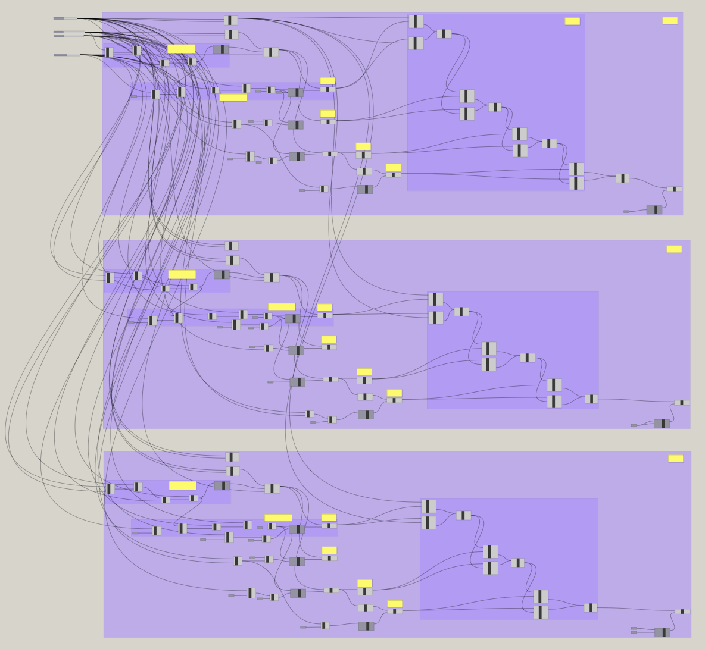

Assignment 4: 3D Printing a Box!
Jessica Douma | HCDE 533 | Autumn 2022

This week we had the option between CNC milling a box or 3D printing a box. Due to time constraints and previous commitments this week, as well as wanting to better understand the tolerance of my 3D printer and better understand painpoints of printing pieces that are designed to be put together, I decided to 3D print my box.
Creating my Initial Model

To create my model, I relied heavily on Grasshopper, since I knew that I would likely need to make lots of small adjustments to get my box to construct just right. I created a Grasshopper definition that took in the box width/height, slit width, notch width, slit/width extent, and number of slits/notches as variables since I knew that these were the things that I would want to be able to change and quickly update. From there, I followed the following steps to create my model:
- Draw the outer bounding rectange
- Draw the rectangle that would represent each slit
- Create a linear array of the slits
- Move and set the distance between the slits such that they are centered within the box and equidistant from each other
- Create a copy of the array and move it to align with the top of the bounding rectangle
- Create a copy of the array, rotate the array, and move it to align with the left edge of the bounding rectangle
- Create a copy of the rotated array, and move it to align with the right edge of the bounding rectangle
- Trim and join the resulting curves to create the bottom surface of the box
I then took this model, copy and pasted the guts of it (everything but the variables and the trimming/joining) and made the following slight modifications for the front and back of the box:
- Move the bottom slits down so that they become notches
- Move the left/right slits out so that they become notches
- Ignore the top slits since we want a flat edge for the box (but leave the logic there in case you change your mind)
- Retrim and join the curves to create the front/back surfaces of the box
I then took this model, copy and pasted the guts of it again (everything but the variables and the trimming/joining) and made the following slight modifications for the sides of the box:
- Move the bottom slits down so that they become notches
- Move the left/right slits back in so that they become slits again
- Keep ignoring the top slits since we want a flat edge for the box (but leave the logic there in case you change your mind)
- Retrim and join the curves to create the side surfaces of the box
My model was working great, I could easily bake each piece into Rhino, where I would then extrude the curves there (I know I can extrude the curves in Grasshopper as well, but I prefer to do it here). I baked two pieces to create a test print so that I could make sure that the pieces all aligned well with no gaps.
Test Print 1


With a baked model ready to go, I exported my objects from Rhino to stl format and imported them to Cura. Since I was just trying to get a quick baseline for how my model was working, I sliced the two surfaces with the "low quality" profile, set the infill to 5% and waited about an hour my print to finish. My prints came out really well, but with the slits and notches sized at exactly the same width, the fit wasn't as tight as I had wanted it... I figured that the fit was too tight, and that with a slightly looser fit the seams would get closer together so I updated my model so that the slits could be one width and the notches could be another slightly smaller width.

In hindsight, this wasn't actually necessary... with enough pressure the pieces fit just as nicely as my other designs (this picture shows a much smaller gap than the picture above from when I first tried ~weakly~ to put the test pieces together). Unfortunately this meant that I spent extra hours updating my models when I didn't need to and printing. But on the bright side, at least I'm super comfortable with Grasshopper now :)
Updating My Model
I switched back to Grasshopper, with a clear understanding of the updates I needed to make, and thought to myself "this will be easy - I just need to create one more slider so that I can differentiate between slit width and notch width and just update the inputs". Easier said than done... Not because the task was non-trivial, but because my Grasshopper file was dense and it was hard to find every spot that I needed to update. After about five minutes of trying to find all the inputs I needed to update, I gave up and decided to create a v2 of the Grasshopper model following these steps:
- Draw the outer bounding rectange
- Draw the rectangle that would represent each slit
- Draw the rectangle that would represent each notch
- Create a linear array of the slits and a second linear array of the notches
- Move and set the distance between the slits such that they are centered within the box and equidistant from each other
- Create a copy of the array and move it to align with the top of the bounding rectangle
- Create a copy of the array, rotate the array, and move it to align with the left edge of the bounding rectangle
- Create a copy of the rotated array, and move it to align with the right edge of the bounding rectangle
- Trim and join the resulting curves to create the bottom surface of the box
This was very similar to my previous model, but this time I had two separate linear arrays so that I could use one for notches and one for slits. For own sanity, and which I easily realized could cause me more work in the future if I decided to change the guts of this section, I decided to copy and paste everything (including the inputs this time) for each surface (i.e. front/back surface and the side surfaces). While this did result in duplication that didn't exisit in my prior model, it did make it easier for me to parse each section and re-wire my model without having to start from scratch. I was also confident in the basic structure of my model at this point as well since I had already verified I got the resulting curves I wanted and the first test print went fine. I will note however, that by copy and pasting the inputs for each section, I definitely introduce the opportunity for user error; it is now up to the user to make sure they input the correct inputs three times, rather than just once.
Test Prints Continued

With my Grasshopper file ready to go, I decided to print two more test prints. One, where the slits were .1mm wider than the notches, and another where the slits were .2mm wider than the notches. I sliced them both with the same settings as before and waited for them to print. Both pieces worked and to be honest, one didn't seem to fit particularly better than the other, so I decided on the .1mm difference. I went into Grasshopper and set the inputs for each surface. I baked each one, extruded them in Rhino, and then mnade a copy of both the side surface and front surface to get the other faces of my box. I imported the stl to Cura, and this time printed with super quality, which took about 6 hours for all 5 pieces.
The test print went great, except for the fact that I realized I hadn't considered that I needed to consider the thickness of the surfaces (equal to the extent of the slits/notches). My box constructed, but the bottom surface was too small in one direction, leaving large gaps.


Updating My Model... Again
I switched back to Grasshopper to make the following adjustments:
- The bottom surface needs to be wider than it's length to account for the thickness of each surface. W = (2 * slitDepth) + length
- Recenter the bottom and top slits given the new width, while keeping maintaining their distance from each other (update the formula to keep the slits equidistant)
- Create a new array of slits for the left/right sides that used the previous distance formula based on length
This was very similar to my V2 model. While I tried again this time to make the changes inline, Grasshopper doesn't make that easy.. so I just replaced the entire bottom surface section. I used the previous version as a reference and just updated my components to take on the new widths where necessary and use the new linear array for the top/bottom slits. Altogether, this update took me less than one hour, and I was back to printing the bottom plate in no time.
Constructing and Testing


With my five pieces printed, I snapped them together and was super happy! There was the slightest gap between the slits and notches but it looked like it would pass the sugar test... so I took my box to the kitchen and poured some in. Success! The sugar stayed in and didn't come trickling out the bottom! And just for funsies, I reprinted the box again using my new colored PLA that just arrived :)


Source Files
Grasshopper Model - V1
Grasshopper Model - V2
Grasshopper Model - V3
Rhino Model for Final Print
Acknowledgements
Emily Rowland for emotional support and validation.